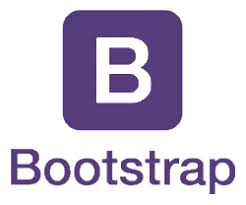
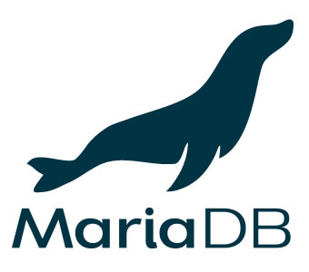

Wep Programmer 우승완의 개발 포트폴리오입니다.
1994.03.18 - 26세 (만 25세)
2010.03 ~ 2013.02 - 양명고등학교 졸업
2013.03 ~ 2019.02 - 한국산업기술대학교 졸업
2018.12.28 ~ 2019.07.01 - 비트캠프 수료
(UI/UX엔지니어링 및 응용 SW엔지니어링 양성과정)
정보처리기사 취득 예정(19.08.16)
최고의 PM을 꿈꾸는 프로그래머입니다.
Why did you have
such a dream?
컴퓨터 공학을 다니면서 어떻게 미래를 설계해야할지 군 전역 후에도 길을 찾지 못했습니다.
그러다 졸업을 하기위한 졸업작품을 설계하기 시작하면서 프로그램에 대해 흥미를 갖기 시작했고,
졸업작품을 끝맞추며 미완성이던 졸업 작품에 대한 미련을 갖게 되었습니다. 좀 더 프로그래밍 기
술을 알고 있었다면 졸업작품을 성공적이게 끝맞출 수 있었지 않았을까 하는 미련으로 대학교 졸업
이후에 비트캠프라는 국비지원 프로그래밍 교육 학원을 다니게 되었습니다.
그 곳에서 저는 저에게 부족했던 프로그래밍 기술들을 배웠고 수료를 하기 위한 프로젝트를 하면서
프로그래밍이라는 분야에 흥미를 가지게 되었습니다. 특히 서로 간의 아이디어를 바탕으로 세워져
가는 프로젝트를 보면서 지금까지 느끼지 못한 희열을 느꼈습니다. 계획한대로 바로바로 이뤄져가는
프로젝트와 서로 합이 맞게 동작하는 팀원들을 보면서, 미래에 저만의 프로젝트를 맡아 한 번
진행해보고 싶다는 생각이 들었습니다. 그리고 같이 개발하면서 팀원들의 고충이나 의견을 들을 수 있는
위치인 Project Manager라는 직책을 알게된 후에 그 직책은 제 꿈이 되었습니다.
아직은 경력, 실력, 경험 모두 부족한 신입 프로그래머이지만, 마음에 품고 있는
꿈은 크게 가지고 있습니다. 그 꿈을 위해서 점차 발전해나가는 모습을 보이도록 노력하겠습니다.
What can you use
to programming language?


What can you use
to web skills?




What can you use
to framework?

What can you use
to database?


for shape management